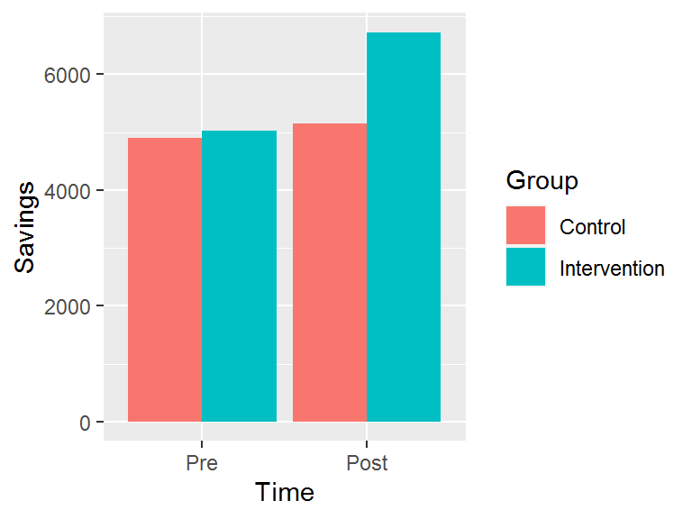

Chapter 8 Mediation analysis
(Work in progress!)
In this example, let’s make up some data for an experiment where people are randomised to one of two groups. The intervention group receives £2000 and the control group receives £500. The hypothesis is that one month later, the intervention group will have more savings than the control group; i.e., they won’t just spend all of the money they have received.
set.seed(42)
study_n <- 200
dat <- tibble(savings_start = rnorm(study_n, 5000, 2000) %>%
ifelse(. < 0, 0, .),
treat_group = rbinom(study_n, size = 1, p = .5),
money_received = ifelse(treat_group == 1,
2000,
500) + rnorm(study_n, 0, 5),
savings_end = -500 + savings_start + money_received +
rnorm(study_n, 0, 600) %>%
ifelse(. < 0, 0, .))
dat <- dat %>%
mutate(treat_group = dplyr::recode(treat_group,
`1` = "Intervention",
`0` = "Control")) %>%
mutate(treat_group = as.factor(treat_group))
dat## # A tibble: 200 x 4
## savings_start treat_group money_received savings_end
## <dbl> <fct> <dbl> <dbl>
## 1 7742. Control 500. 8359.
## 2 3871. Intervention 2004. 5923.
## 3 5726. Intervention 2000. 7226.
## 4 6266. Control 504. 6351.
## 5 5809. Intervention 1999. 7308.
## 6 4788. Control 500. 4787.
## 7 8023. Intervention 2002. 9525.
## 8 4811. Control 505. 4816.
## 9 9037. Control 494. 9031.
## 10 4875. Control 500. 5376.
## # ... with 190 more rowsHere’s a graph:
dat %>%
group_by(treat_group) %>%
summarise(savings_Pre = mean(savings_start),
savings_Post = mean(savings_end)) %>%
pivot_longer(cols = starts_with("savings"),
names_to = "time",
values_to = "savings",
names_prefix = "savings_") %>%
mutate(time = factor(time)) %>%
mutate(time = relevel(time, "Pre")) %>%
ggplot(aes(x = time, y = savings, fill = treat_group)) +
geom_col(position = "dodge") +
labs(x = "Time",
y = "Savings",
fill = "Group")## `summarise()` ungrouping output (override with `.groups` argument)
Fit the two models:
mod_med <- lm(money_received ~ savings_start + treat_group, data = dat)
mod_out <- lm(savings_end ~ savings_start + treat_group + money_received, data = dat)Have a look:
summary(mod_med)##
## Call:
## lm(formula = money_received ~ savings_start + treat_group, data = dat)
##
## Residuals:
## Min 1Q Median 3Q Max
## -11.6671 -3.0849 -0.1591 3.3646 14.6775
##
## Coefficients:
## Estimate Std. Error t value Pr(>|t|)
## (Intercept) 4.998e+02 9.703e-01 515.100 <2e-16 ***
## savings_start -5.186e-05 1.753e-04 -0.296 0.768
## treat_groupIntervention 1.501e+03 6.794e-01 2208.806 <2e-16 ***
## ---
## Signif. codes: 0 '***' 0.001 '**' 0.01 '*' 0.05 '.' 0.1 ' ' 1
##
## Residual standard error: 4.772 on 197 degrees of freedom
## Multiple R-squared: 1, Adjusted R-squared: 1
## F-statistic: 2.442e+06 on 2 and 197 DF, p-value: < 2.2e-16The coefficients for the model regressing savings on treatment group and money received wipe each other out…
summary(mod_out)##
## Call:
## lm(formula = savings_end ~ savings_start + treat_group + money_received,
## data = dat)
##
## Residuals:
## Min 1Q Median 3Q Max
## -265.4 -249.8 -199.9 180.2 1742.1
##
## Coefficients:
## Estimate Std. Error t value Pr(>|t|)
## (Intercept) 170.10314 2532.28559 0.067 0.947
## savings_start 0.99974 0.01246 80.223 <2e-16 ***
## treat_groupIntervention 1185.99116 7600.14736 0.156 0.876
## money_received 0.17450 5.06477 0.034 0.973
## ---
## Signif. codes: 0 '***' 0.001 '**' 0.01 '*' 0.05 '.' 0.1 ' ' 1
##
## Residual standard error: 339.2 on 196 degrees of freedom
## Multiple R-squared: 0.9745, Adjusted R-squared: 0.9741
## F-statistic: 2500 on 3 and 196 DF, p-value: < 2.2e-16Check out the VIF:
vif(mod_out)## savings_start treat_group money_received
## 1.001488 24792.453868 24792.238825HUGE, as expected.
Test the mediation:
library(mediation)## Loading required package: MASS##
## Attaching package: 'MASS'## The following object is masked from 'package:srvyr':
##
## select## The following object is masked from 'package:dplyr':
##
## select## Loading required package: mvtnorm## Loading required package: sandwich## mediation: Causal Mediation Analysis
## Version: 4.5.0test_med <- mediate(model.m = mod_med,
model.y = mod_out,
treat = "treat_group",
mediator = "money_received",
robustSE = TRUE,
sims = 100,
control.value = "Control",
treat.value = "Intervention")
summary(test_med)##
## Causal Mediation Analysis
##
## Quasi-Bayesian Confidence Intervals
##
## Estimate 95% CI Lower 95% CI Upper p-value
## ACME 812.599 -16287.267 17423 0.98
## ADE 636.341 -15973.607 17711 0.80
## Total Effect 1448.940 1368.180 1507 <2e-16 ***
## Prop. Mediated 0.282 -11.547 12 0.98
## ---
## Signif. codes: 0 '***' 0.001 '**' 0.01 '*' 0.05 '.' 0.1 ' ' 1
##
## Sample Size Used: 200
##
##
## Simulations: 100